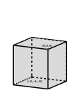

The metric space \((\R^n,d_E)\) is not compact since the open cover \(\{B(0, n)\}_{n \in \Z^+}\) has no finite sub-cover. Since we have already shown that \((\R,d_E)\) is homeomorphic to the topological subspaces \((a,b)\text{,}\)\((-\infty, b)\text{,}\) and \((a,\infty)\) for any \(a,
b \in \R\text{,}\) we conclude that no open intervals are compact. Similarly, no half-closed intervals are compact. In fact, we will demonstrate in this section that the compact subsets of \((\R^n, d_E)\) are exactly the subsets that are closed and bounded. The first step is contained in the next activity.
Activity17.4.
We have seen that compact sets can be either open or closed. However, in certain situations compact sets must be closed. We investigate that idea in this activity. Let \(A\) be a compact subset of a Hausdorff topological space \(X\text{.}\) We will examine why \(A\) must be a closed set.
(a)
To prove that \(A\) is a closed set, we consider the set \(X \setminus A\text{.}\) What property of \(X \setminus A\) will ensure that \(A\) is closed? How do we prove that \(X \setminus A\) has this property?
(b)
Let \(x \in X \setminus A\text{.}\) Assume that \(A\) is a nonempty set (why can we make this assumption)? For each \(a \in A\text{,}\) why must there exist disjoint open sets \(O_{xa}\) and \(O_a\) with \(x \in O_{xa}\) and \(a \in O_a\text{?}\)
(c)
Why must there exist a positive integer \(n\) and elements \(a_1\text{,}\)\(a_2\text{,}\)\(\ldots\text{,}\)\(a_n\) in \(A\) such that the sets \(O_{a_1}\text{,}\)\(O_{a_2}\text{,}\)\(\ldots\text{,}\)\(O_{a_n}\) form an open cover of \(A\text{?}\)
(d)
Now find an open subset of \(X \setminus A\) that has \(x\) as an element. What does this tell us about \(A\text{?}\)
If \(A\) is a compact subset of a Hausdorff topological space, then \(A\) is closed.
Theorem 17.6 tells us something about compact subsets of \((\R^n, d_E)\text{.}\) Since every metric space is Hausdorff, we can conclude the following corollary.
Corollary17.7.
If \(A\) is a compact subset of \((\R^n, d_E)\text{,}\) then \(A\) is closed.
To classify the compact subsets of \((\R^n, d_E)\) as closed and bounded, we need to discuss what it means for a set in \(\R^n\) to be bounded. The basic idea is straightforward — a subset of \(\R^n\) is bounded if it doesn’t go off to infinity in any direction. In other words, a subset \(A\) of \(\R^n\) is bounded if we can construct a box in \(\R^n\) that is large enough to contain it. Thus, the following definition.
Definition17.8.
A subset \(A\) of \(\R^n\) is bounded if there exists \(M \gt 0\) such that \(A \subseteq Q^n_M\text{,}\) where
\begin{equation*}
Q^n_M = \{(x_1,x_2, \ldots, x_n) \mid -M \leq x_i \leq M \text{ for every } 1 \leq i \leq n\}\text{.}
\end{equation*}
The set \(Q^n_M\) in Definition 17.8 is called the standard \(n\)-dimensional cube of size M. A standard 3-dimensional cube of size \(M\) is shown in Figure 17.9.

Figure17.9.A standard 3-cube \(Q^3_M\text{.}\)
An important fact about standard \(n\)-cubes is that they are compact subsets of \(\R^n\text{.}\) Compactness is a complicated property — it is difficult to prove a result that is true about every open cover. As a result, the proof of Theorem 17.10 is quite technical, but it is a critical step to classifying the compact subsets of \(\R^n\text{.}\)
Theorem17.10.
Let \(n \in \Z^+\text{.}\) The standard \(n\)-dimensional cube of size \(M\) is a compact subset of \(\R^n\) for any \(M \gt 0\text{.}\)
Proof.
We proceed by contradiction and assume that there is an \(n \in \Z^+\) and a positive real number \(M\) such that \(Q^n_M\) is not compact. So there exists an open cover \(\{O_{\alpha}\}\) with \(\alpha\) in some indexing set \(I\) of \(Q^n_M\) that has no finite sub-cover. Let \(Q_0 = Q^n_M\) so that \(Q_0\) is an \(n\)-cube with side length \(2M\text{.}\) Partition \(Q_0\) into \(2^n\) uniform sub-cubes of side length \(M = \frac{2M}{2}\) (a picture for \(n=2\) is shown at left in Figure 17.11).
Figure17.11.Left : \(Q_1\text{.}\) Middle: \(Q_2\text{.}\) Right: Labeling the corners.
Let \(Q'_0\) be one of these sub-cubes. The collection \(\{O_{\alpha} \cap Q'_0\}_{\alpha \in I}\) is an open cover of \(Q'_0\) in the subspace topology. If each of these open covers has a finite sub-cover, then we can take the union of all of the \(O_{\alpha}\)s over all of the finite sub-covers to obtain a finite sub-cover of \(\{O_{\alpha}\}_{\alpha \in I}\) for \(Q_0\text{.}\) Since our cover \(\{O_{\alpha}\}_{\alpha \in I}\) for \(Q_0\) has no finite sub-cover, we conclude that there is one sub-cube, \(Q_1\text{,}\) for which the open cover \(\{O_{\alpha} \cap Q_1\}_{\alpha \in I}\) has no finite sub-cover. Now we repeat the process and partition \(Q_1\) into \(2^n\) uniform sub-cubes of side length \(\frac{M}{2}= \frac{2M}{2^2}\text{.}\) The same argument we just made tells us that there is a sub-cube \(Q_2\) of \(Q_1\) for which the open cover \(\{O_{\alpha} \cap Q_2\}_{\alpha \in I}\) has no finite sub-cover (an illustration for the \(n=2\) case is shown at middle in Figure 17.11). We proceed inductively to obtain an infinite nested sequence
of cubes such that for each \(k \in \Z\text{,}\) the lengths of the sides of cube \(Q_k\) are \(\frac{M}{2^{k-1}} = \frac{2M}{2^{k}}\) and the open cover \(\{O_{\alpha} \cap Q_k\}_{\alpha \in I}\) of \(Q_k\) has no finite sub-cover. Now we show that \(\bigcap_{k=1}^{\infty} Q_k \neq \emptyset\text{.}\)
For \(i \in \Z^+\text{,}\) let \(Q_i = [a_{i,1}, b_{i,1}] \times [a_{i,2}, b_{i,2}] \times \cdots [a_{i,n}, b_{i,n}]\text{.}\) That is, think of the point \((a_{i,1}, a_{i,2}, \ldots,
a_{i,n})\) as a lower corner of the cube and the point \((b_{i,1}, b_{i,2}, \ldots,
b_{i,n})\) as an upper corner of the \(n\)-cube \(Q_i\) (a labeling for \(n=2\) and \(i\) from 1 to 3 is shown at right in Figure 17.11). Let \(q = (\sup\{a_{i,1}\}, \sup\{a_{i,2}\}, \ldots, \sup\{a_{i,n}\})\text{.}\) We will show that \(q \in \bigcap_{k=1}^{\infty} Q_k\text{.}\) Fix \(r \in \Z^+\text{.}\) We need to demonstrate that
\begin{equation*}
q \in Q_r = \{(x_1, x_2, \ldots, x_n) \mid a_{r,s} \leq x_s \leq b_{r,s} \text{ for each } 1 \leq s \leq n\}\text{.}
\end{equation*}
for every \(i\) and \(s\text{.}\) Since \(\sup\{a_{i,s}\}\) is the least upper bound of all of the \(a_{i,s}\text{,}\) property (17.2) shows that \(\sup\{a_{i,s}\} \leq b_{i,s}\) for every \(i\text{.}\) Thus, \(\sup\{a_{i,s}\} \leq b_{r,s}\) and so \(a_{r,s} \leq \sup\{a_{i,s}\} \leq b_{r,s}\text{.}\) This shows that \(q \in Q_k\) for every \(k\text{.}\) Consequently, \(q \in \bigcap_{k=1}^{\infty} Q_k\) and \(\bigcap_{k=1}^{\infty} Q_k\) is not empty. (The fact that the side lengths of our cubes are converging to 0 implies that \(\bigcap_{k=1}^{\infty} Q_k = \{q\}\text{,}\) but we only need to know that \(\bigcap_{k=1}^{\infty} Q_k\) is not empty for our proof.)
Since \(\{O_{\alpha}\}_{\alpha \in I}\) is a cover for \(Q_0\text{,}\) there must exist an \(\alpha_q \in I\) such that \(q \in O_{\alpha_q}\text{.}\) The set \(O_{\alpha_q}\) is open, so there exists \(\epsilon_q \gt 0\) such that \(B(q, \epsilon_q) \subseteq O_{\alpha_q}\text{.}\) The maximum distance between points in \(Q_k\) is the distance between the corner points \((a_{k,1}, a_{k,2}, \ldots,
a_{k,n})\) and \((b_{k,1}, b_{k,2}, \ldots, b_{k,n})\text{,}\) where each length \(b_{k,s} - a_{k,s}\) is \(\frac{M}{2^{k-1}}\text{.}\) The distance formula tells us that this maximum distance between points in \(Q_k\) is
Now choose \(K \in \Z^+\) such that \(D_K \lt \epsilon_q\text{.}\) Then if \(x \in Q_K\) we have \(d_E(q,x)\lt D_K\) and \(x \in B(q, \epsilon_q)\text{.}\) So \(Q_K \subseteq B(q, \epsilon_q)\text{.}\) But \(B(q, \epsilon_q) \subseteq O_{\alpha_q}\text{.}\) So the collection \(\{O_{\alpha_q} \cap Q_K\}\) is a sub-cover of \(\{O_{\alpha} \cap Q_K\}_{\alpha \in I}\) for \(Q_K\text{.}\) But this contradicts the fact this open cover has no finite sub-cover. The assumption that led us to this contradiction was that \(Q_0\) was not compact, so we conclude that the standard \(n\)-dimensional cube of size \(M\) is a compact subset of \(\R^n\) for any \(M \gt 0\text{.}\)
One consequence of Theorem 17.10 is that any closed interval \([a,b]\) in \(\R\) is a compact set. But we can say even more — that the compact subsets of \(\R^n\) are the closed and bounded subsets. This will require one more intermediate result about closed subsets of compact topological spaces.
Activity17.5.
Let \(X\) be a compact topological space and \(C\) a closed subset of \(X\text{.}\) In this activity we will prove that \(C\) is compact.
(a)
What does it take to prove that \(C\) is compact?
(b)
Use an open cover for \(C\) and the fact that \(C\) is closed to make an open cover for \(X\text{.}\)
(c)
Use the fact that \(X\) is compact to complete the proof of the following theorem.
Theorem17.12.
Let \(X\) be a compact topological space. Then any closed subset of \(X\) is compact.
Now we can prove a major result, that the compact subsets of \((\R^n, d_E)\) are the closed and bounded subsets. This result is important enough that it is given a name.
Theorem17.13.The Heine-Borel Theorem.
A subset \(A\) of \((\R^n, d_E)\) is compact if and only if \(A\) is closed and bounded.
Proof.
Let \(A\) be a subset of \((\R^n, d_E)\text{.}\) Assume that \(A\) is closed and bounded. Since \(A\) is bounded, there is a positive number \(M\) such that \(A \subseteq Q^n_M\text{.}\)Theorem 17.10 shows that \(Q^n_M\) is compact, and then Theorem 17.12 shows that \(A\) is compact.
For the converse, assume that \(A\) is a compact subset of \(\R^n\text{.}\) We must show that \(A\) is closed and bounded. Now \((\R^n, d_E)\) is a metric space, and so Hausdorff. Theorem 17.6 then shows that \(A\) is closed. To conclude our proof, we need to demonstrate that \(A\) is bounded. For each \(k \gt 0\text{,}\) let
\begin{equation*}
O_k = \{ (x_1,x_2, \ldots, x_n) \mid -k \lt x_i \lt k \text{ for every } 1 \leq i \leq n\}\text{.}
\end{equation*}
That is, \(O_k\) is the open \(k\)-cube in \(\R^n\text{.}\) Next let
\begin{equation*}
U_k = O_k \cap A
\end{equation*}
for each \(k\text{.}\) Since \(\bigcup_{k \gt 0} O_k = \R^n\text{,}\) it follows that \(\{U_k\}_{k \gt 0}\) is an open cover of \(A\text{.}\) The fact that \(A\) is compact means that there is a finite collection \(U_{k_1}\text{,}\)\(U_{k_2}\text{,}\)\(\ldots\text{,}\)\(U_{k_m}\) of sets in \(\{U_k\}_{k \gt 0}\) that cover \(A\text{.}\) Let \(K = \max\{k_i \mid 1 \leq i \leq m\}\text{.}\) Then \(U_{k_i} \subseteq U_K\) for each \(i\text{,}\) and so \(A \subseteq U_K \subset Q^m_K\text{.}\) Thus, \(A\) is bounded. This completes the proof that if \(A\) is compact in \(\R^n\text{,}\) then \(A\) is closed and bounded.
You might wonder whether the Heine-Borel Theorem is true in any metric space.
Activity17.6.
A subset \(A\) of a metric space \((X, d)\) is bounded if there exists a real number \(M\) such that \(d(a_1,a_2) \leq M\) for all \(a_1, a_2 \in A\text{.}\) (This is equivalent to our definition of a bounded subset of \(\R^n\) given earlier, but works in any metric space.) Explain why \(\Z\) as a subset of \((\R,d)\text{,}\) where \(d\) is the discrete metric, is closed and bounded but not compact.